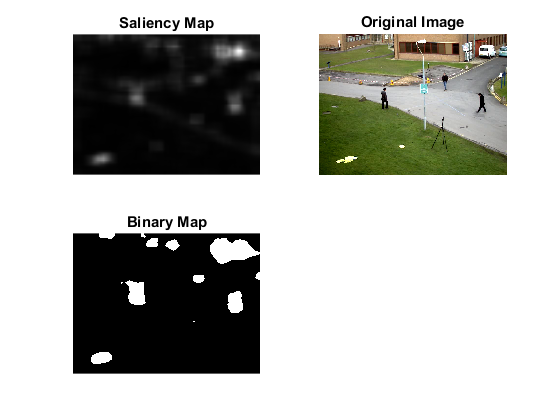

Saliency algorithms demo
This example shows the functionality of "Saliency"
Sources:
Contents
Options
choose Saliency algorithm
alg = 'SpectralResidual'; alg = validatestring(alg, ... {'SpectralResidual', 'FineGrained', 'BinWangApr2014', 'BING'}); % path of input video file to read frames from video_name = fullfile(mexopencv.root(),'test','768x576.avi'); start_frame = 0; % index of starting frame if exist(video_name, 'file') ~= 2 % download video from Github disp('Downloading video...') url = 'https://cdn.rawgit.com/opencv/opencv/3.1.0/samples/data/768x576.avi'; urlwrite(url, video_name); end % path to trained Objectness model (for BING algorithm) training_path = fullfile(mexopencv.root(),'test','ObjectnessTrainedModel'); if strcmp(alg, 'BING') && ~isdir(training_path) % download from GitHub files = { 'ObjNessB2W8HSV.idx.yml.gz' 'ObjNessB2W8HSV.wS1.yml.gz' 'ObjNessB2W8HSV.wS2.yml.gz' 'ObjNessB2W8I.idx.yml.gz' 'ObjNessB2W8I.wS1.yml.gz' 'ObjNessB2W8I.wS2.yml.gz' 'ObjNessB2W8MAXBGR.idx.yml.gz' 'ObjNessB2W8MAXBGR.wS1.yml.gz' 'ObjNessB2W8MAXBGR.wS2.yml.gz' }; disp('Downloading trained models...'); mkdir(training_path); for i=1:numel(files) url = 'https://cdn.rawgit.com/opencv/opencv_contrib/3.2.0/modules/saliency/samples/ObjectnessTrainedModel/'; urlwrite([url files{i}], fullfile(training_path,files{i})); end end
Prepare video source
cap = cv.VideoCapture(video_name); assert(cap.isOpened(), 'Could not initialize capturing'); cap.PosFrames = start_frame; frame = cap.read(); assert(~isempty(frame), 'Could not read data from the video source');
Instantiate the specified Saliency
switch alg case 'SpectralResidual' saliency = cv.StaticSaliencySpectralResidual(); case 'FineGrained' saliency = cv.StaticSaliencyFineGrained(); case 'BinWangApr2014' saliency = cv.MotionSaliencyBinWangApr2014(); case 'BING' saliency = cv.ObjectnessBING(); otherwise error('Unrecognized saliency algorithm'); end disp(saliency)
StaticSaliencySpectralResidual with properties:
id: 2
ImageWidth: 64
ImageHeight: 64
Compute saliency
switch alg case {'SpectralResidual', 'FineGrained'} % compute tic, saliencyMap = saliency.computeSaliency(frame); toc if isa(saliencyMap, 'uint8') saliencyMap = single(saliencyMap) / 255; end tic, binaryMap = saliency.computeBinaryMap(saliencyMap); toc binaryMap = logical(binaryMap ~= 0); % show subplot(221), imshow(saliencyMap), title('Saliency Map') subplot(222), imshow(frame), title('Original Image') subplot(223), imshow(binaryMap), title('Binary Map') case 'BinWangApr2014' % initialize sz = size(frame); saliency.setImagesize(sz(2), sz(1)); saliency.init(); % prepare plots subplot(121); hImg(1) = imshow(frame); title('img') subplot(122); hImg(2) = imshow(false(sz(1:2))); title('saliencyMap') % loop over frames while all(ishghandle(hImg)) % read frame frame = cap.read(); if isempty(frame), break; end set(hImg(1), 'CData',frame) % compute motion saliency of current frame fprintf('frame #%3d: ', cap.PosFrames); frame = cv.cvtColor(frame, 'RGB2GRAY'); tic, saliencyMap = saliency.computeSaliency(frame); toc saliencyMap = logical(saliencyMap); % show %NOTE: for the first dozen frames, saliency is all 1 set(hImg(2), 'CData',saliencyMap) drawnow end case 'BING' % initialize assert(~isempty(training_path), 'Path of trained files missing'); saliency.setTrainingPath(training_path); saliency.setBBResDir(fullfile(tempdir(),'Results')); % compute tic objectnessBoundingBox = saliency.computeSaliency(frame); objectnessValues = saliency.getObjectnessValues(); toc fprintf('Objectness done. ndet = %d\n', numel(objectnessBoundingBox)); dir(fullfile(tempdir(),'Results')) %TODO: poor bounding boxes, are they ordered correctly? if false % sort by values (ascending or descending ?) [objectnessValues, idx] = sort(objectnessValues, 'descend'); objectnessBoundingBox = objectnessBoundingBox(idx); end % plot bounding boxes around possible objects % (results are sorted by objectness, we use the first few boxes here) maxd = 7; clr = round(255 * lines(maxd)); for i=1:min(maxd, numel(objectnessBoundingBox)) bb = objectnessBoundingBox{i}; val = objectnessValues(i); % add jitter to seperate single rects off = rand(1,2) * 2 * 9 - 9; frame = cv.rectangle(frame, bb(1:2)+off, bb(3:4)+off, ... 'Color',clr(i,:), 'Thickness',2); frame = cv.putText(frame, num2str(val), bb(1:2)+off+[2 -3], ... 'Color',clr(i,:), 'FontScale',0.5); % mini temperature scale frame = cv.rectangle(frame, [20 20+(i-1)*10 10 10], ... 'Color',clr(i,:), 'Thickness',-1); end imshow(frame), title('Objectness') end
Elapsed time is 0.008646 seconds. Elapsed time is 0.148892 seconds.
release video source
cap.release();